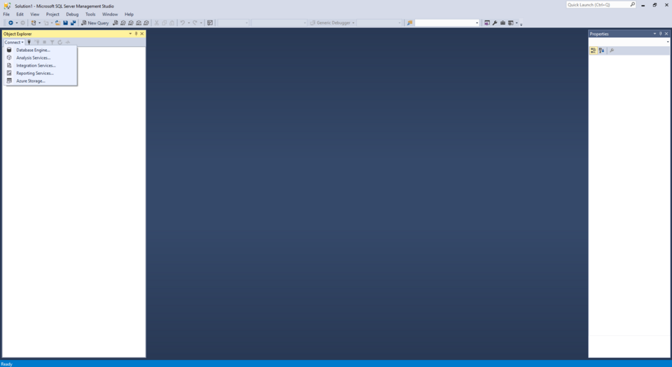
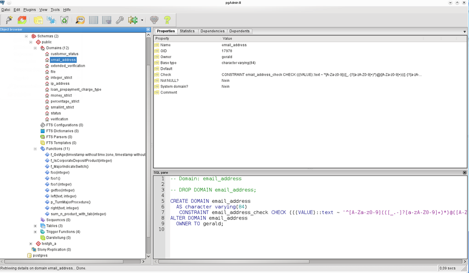
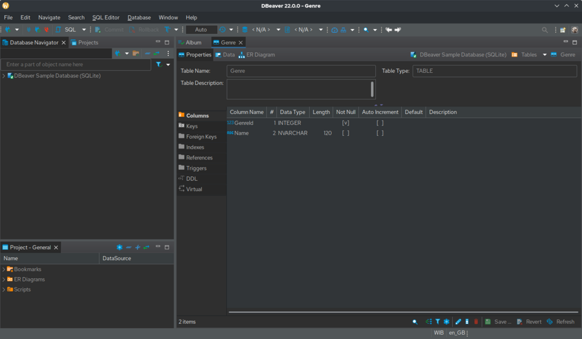
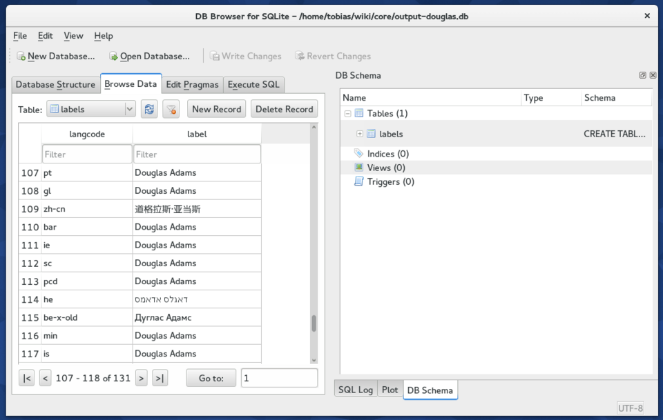

Tema 07 · Persistencia
CREATE TABLESELECT y sus filtrosJOIN, INSERT, UPDATE, DELETESupongamos que queremos manejar una clínica.
La clínica tiene pacientes; los pacientes sacan turnos y van con los médicos.
| Forma | Cómo se guarda | Hasta dónde llega |
|---|---|---|
| Lista en memoria | Un List<Turno> dentro del programa | Se reinicia la API → se pierde todo |
| Archivo de texto / CSV | Una línea por turno, campos separados por coma | Hay que partir y convertir cada línea a mano |
| Archivo JSON | La lista entera serializada en turnos.json | Sobrevive, pero el programa hace todo el trabajo |
// Para agregar UN turno: leer todo, agregar y volver a escribir todo var turnos = JsonSerializer.Deserialize<List<Turno>>(File.ReadAllText("turnos.json")); turnos.Add(nuevo); File.WriteAllText("turnos.json", JsonSerializer.Serialize(turnos));
Con pocos datos y un solo programa, alcanza. El problema aparece cuando los datos crecen.
El problema es que es un archivo suelto: no se administra solo.
El programa ya no lee ni escribe el archivo: le pide los datos a un motor (SGBD), que se encarga de guardarlos, encontrarlos y cuidarlos.
SQLite, SQL Server, PostgreSQL, MySQL
MongoDB, CouchDB, Firestore
| Con un archivo | Lo resuelve el motor con… |
|---|---|
| Reescribir todo por un cambio | Lee y escribe solo lo que cambia, aunque haya millones de registros |
| Recorrer todo para buscar | Índices: llega al registro sin recorrer la tabla, como el índice de un libro |
| Relaciones a mano | Claves foráneas: el turno apunta al paciente sin copiarlo, y el motor controla que exista |
| Duplicación | Clave primaria y restricciones UNIQUE: rechaza lo repetido |
| Varios a la vez | Ordena los accesos para que nadie pise a nadie |
| Cortes a mitad de camino | Transacciones: se guarda todo o no se guarda nada |
INSERT para guardar un turno, SELECT para pedir los turnos de Ana.Dato
381-4567890
Un elemento suelto: ¿de quién es?
Información
El teléfono de Ana Gómez es 381-4567890
Datos relacionados entre sí
Una base de datos guarda datos y sus relaciones: de ahí sale la información.
Un conjunto de datos relacionados entre sí, de un mismo contexto, guardados de forma organizada para usarlos después.
La base se crea y se mantiene con un SGBD (sistema de gestión de bases de datos), o simplemente motor: el programa que está entre las aplicaciones y los datos.
Crea las tablas, sus campos, sus tipos y las reglas que tienen que cumplir.
Recibe instrucciones SQL, usa índices y devuelve solo lo pedido.
Rechaza duplicados y claves foráneas que apuntan a la nada.
Ordena a varios usuarios trabajando al mismo tiempo.
Usuarios y permisos: quién puede leer y quién puede modificar.
Transacciones y respaldos: la base sobrevive a cortes y caídas.
La aplicación se ocupa de qué datos quiere; el motor, de cómo guardarlos y encontrarlos.
El motor no tiene ventanas: se le habla con SQL. Para ver las tablas, editar datos y probar consultas se usa una herramienta visual.


Captura: Wikimedia Commons (SSMS y pgAdmin)

Captura: Wikimedia Commons
Físicamente, en archivos en el disco. La diferencia es que no los toca la aplicación: los administra el motor.
Las tablas y los índices: el .mdf de SQL Server, la carpeta data de PostgreSQL, el .db de SQLite.
El log (en PostgreSQL y SQLite, WAL). Cada cambio se anota acá antes de aplicarse: después de un corte, el motor lo relee y no se pierde nada de lo confirmado.
Una copia de la base hecha cada tanto (backup), guardada en otro lado.
| Motor | Tipo | Cómo corre | Herramienta visual | Dónde quedan los datos |
|---|---|---|---|---|
| SQLite | Relacional | Biblioteca dentro de la app | DB Browser for SQLite | Un archivo .db |
| PostgreSQL | Relacional | Servidor aparte | pgAdmin | Carpeta data + WAL en pg_wal |
| MySQL / MariaDB | Relacional | Servidor aparte | MySQL Workbench, HeidiSQL | Carpeta de datos, un .ibd por tabla |
| SQL Server | Relacional | Servidor aparte | SQL Server Management Studio | .mdf (datos) + .ldf (log) |
| Oracle | Relacional | Servidor aparte | SQL Developer | Datafiles .dbf + redo logs |
| MongoDB | Documental (JSON) | Servidor aparte | MongoDB Compass | Carpeta de datos + journal |
La herramienta visual que usamos para abrir el .db, mirar las tablas y probar consultas.

Captura: Wikimedia Commons
Una base de datos relacional es un conjunto de tablas y las relaciones que se producen entre ellas.
Lo propuso E. F. Codd en 1970 (A Relational Model of Data for Large Shared Data Banks): los datos se organizan en relaciones (tablas), que son conjuntos de tuplas (filas) con atributos (columnas), y se consultan con operaciones sobre esas relaciones, la base del álgebra relacional.
| Id | Nombre | DNI | Telefono |
|---|---|---|---|
| 1 | Ana Gómez | 30111222 | 381-4567890 |
| 2 | Bruno Díaz | 28999000 | NULL |
| 3 | Carla Ruiz | 35444555 | 381-5550001 |
| 4 | Mariana Paz | 40123123 | 381-6001234 |
Id numérico que genera la base| Id | Nombre | DNI | Telefono |
|---|---|---|---|
| 1 | Ana Gómez | 30111222 | 381-4567890 |
| 2 | Bruno Díaz | 28999000 | NULL |
| 3 | Carla Ruiz | 35444555 | 381-5550001 |
| 4 | Mariana Paz | 40123123 | 381-6001234 |
Se la llama PK, por Primary Key.
| Fecha | Paciente | TelPaciente | Medico | Especialidad |
|---|---|---|---|---|
| 20/10 09:00 | Ana Gómez | 381-4567890 | Laura Sosa | Clínica médica |
| 20/10 10:30 | Bruno Díaz | NULL | Inés Molina | Cardiología |
| 22/10 11:00 | Ana Gómez | 381-4567890 | Inés Molina | Cardiología |
| 27/10 16:00 | Mariana Paz | 381-6001234 | Laura Sosa | Clínica médica |
Los datos de Ana están dos veces.
Si cambia el teléfono, hay que acordarse de todas las filas.
Si se borra el único turno de un médico, el médico desaparece.
Cada dato se guarda una sola vez. Turno no copia al paciente: guarda su Id.
Un paciente tiene muchos turnos; cada turno es de un paciente: relación 1 a N.
| Id | PacienteId | MedicoId | Fecha |
|---|---|---|---|
| 1 | 1 | 1 | 20/10 09:00 |
| 2 | 2 | 3 | 20/10 10:30 |
| 3 | 1 | 3 | 22/10 11:00 |
| 4 | 3 | 2 | 23/10 08:15 |
| Id | Nombre |
|---|---|
| 1 | Ana Gómez |
| 2 | Bruno Díaz |
| 3 | Carla Ruiz |
Turno.PacienteId es una clave foránea (FK): guarda la clave primaria de otra tabla. Así se arma la relación.La base no permite que una clave foránea apunte a algo que no existe.
INSERT INTO Turno (PacienteId, MedicoId, Fecha) VALUES (99, 1, '2026-11-01 10:00');
FOREIGN KEY constraint failed
DELETE FROM Paciente WHERE Id = 1;
FOREIGN KEY constraint failed
En SQLite este control depende de PRAGMA foreign_keys = ON; — la librería que usamos desde C# ya lo trae activado.
Structured Query Language: el lenguaje estándar para hablar con una base relacional.
CREATE TABLE · ALTER TABLE · DROP TABLE
SELECT · INSERT · UPDATE · DELETE
Es un estándar, pero cada motor tiene su dialecto: lo básico es igual en SQLite, SQL Server o PostgreSQL.
CREATE TABLE Paciente ( Id INTEGER PRIMARY KEY AUTOINCREMENT, Nombre TEXT NOT NULL, DNI TEXT UNIQUE, Telefono TEXT ); CREATE TABLE Turno ( Id INTEGER PRIMARY KEY AUTOINCREMENT, PacienteId INTEGER NOT NULL, MedicoId INTEGER NOT NULL, Fecha TEXT NOT NULL, Observaciones TEXT, FOREIGN KEY (PacienteId) REFERENCES Paciente(Id), FOREIGN KEY (MedicoId) REFERENCES Medico(Id) );
AUTOINCREMENT: el Id lo pone la baseNOT NULL: campo obligatorioUNIQUE: no se repiteINTEGER, REAL, TEXT, BLOBTEXT: '2026-10-20 09:00'SELECT campos FROM tabla [WHERE condición] [ORDER BY campo]
SELECT * FROM Paciente; -- todo SELECT Nombre, DNI FROM Paciente WHERE Id > 2 ORDER BY Nombre;
En el WHERE: = <> < > AND OR NOT
| Nombre | DNI |
|---|---|
| Carla Ruiz | 35444555 |
| Diego Herrera | 33777888 |
| Mariana Paz | 40123123 |
SELECT Id, Nombre FROM Paciente WHERE Nombre LIKE '%ana%';
| Id | Nombre |
|---|---|
| 1 | Ana Gómez |
| 4 | Mariana Paz |
| Comodín | Significa |
|---|---|
% | cualquier cantidad de caracteres |
_ | exactamente un carácter |
'A%' | empieza con A |
'%z' | termina en z |
SELECT Nombre, Especialidad FROM Medico WHERE Especialidad IN ('Pediatría', 'Cardiología');
| Nombre | Especialidad |
|---|---|
| Martín Vera | Pediatría |
| Inés Molina | Cardiología |
SELECT Id, PacienteId, Fecha FROM Turno WHERE Fecha BETWEEN '2026-10-21' AND '2026-10-25';
| Id | PacienteId | Fecha |
|---|---|---|
| 3 | 1 | 2026-10-22 11:00 |
| 4 | 3 | 2026-10-23 08:15 |
SELECT Nombre FROM Paciente WHERE Telefono IS NULL;
| Nombre |
|---|
| Bruno Díaz |
| Diego Herrera |
SELECT Nombre FROM Paciente WHERE Telefono = NULL;
No da error… pero devuelve 0 filas.
NULL no es cero ni texto vacío: es “no se sabe”. Por eso se pregunta con IS NULL o IS NOT NULL.SELECT t.Fecha, p.Nombre AS Paciente, m.Nombre AS Medico FROM Turno t INNER JOIN Paciente p ON t.PacienteId = p.Id INNER JOIN Medico m ON t.MedicoId = m.Id ORDER BY t.Fecha;
ON dice cómo se relacionan: FK = PKt, p, m son alias| Fecha | Paciente | Medico |
|---|---|---|
| 2026-10-20 09:00 | Ana Gómez | Laura Sosa |
| 2026-10-20 10:30 | Bruno Díaz | Inés Molina |
| 2026-10-22 11:00 | Ana Gómez | Inés Molina |
| 2026-10-23 08:15 | Carla Ruiz | Martín Vera |
SELECT COUNT(*) FROM Paciente;
5
Otras: SUM, AVG, MIN, MAX.
SELECT m.Nombre, COUNT(*) AS Turnos FROM Turno t INNER JOIN Medico m ON t.MedicoId = m.Id GROUP BY m.Nombre;
| Nombre | Turnos |
|---|---|
| Inés Molina | 4 |
| Laura Sosa | 5 |
| Martín Vera | 3 |
INSERT INTO Paciente (Nombre, DNI) VALUES ('Lucía Fernández', '42000111');
UPDATE Paciente SET Telefono = '381-4001122' WHERE Id = 6;
DELETE FROM Paciente WHERE Id = 6;
UPDATE o DELETE sin WHERE se aplica a todas las filas de la tabla.clinica.db y abrila con Abrir base de datosclinica.db, y en Ejecutar SQL pegá clinica.sqlLa base y el script con las tres tablas y datos de ejemplo (5 pacientes, 3 médicos, 12 turnos) están en la carpeta material de este tema.
Es la misma base que vamos a usar desde C# en el tema 08.
link de GitHub Classroom 2026
Próximo: ADO.NET — estas mismas consultas, desde C#.